Konjunktur refererer til de periodiske svingningene i økonomisk aktivitet som karakteriserer en markedsøkonomi. Disse konjunktursyklusene påvirker alle aspekter av næringslivet, inkludert regnskapsføring, budsjettplanlegging og finansiell rapportering.
For et bredere perspektiv på de overordnede økonomiske kreftene, se Makroøkonomi.
Datagrunnlaget for konjunkturanalyse hentes fra Statistisk sentralbyrå (SSB), som publiserer løpende økonomiske rapporter og indikatorer.
Hva er Konjunktur?
Konjunktur beskriver de naturlige svingningene i økonomisk aktivitet over tid. Disse syklusene består av perioder med økonomisk vekst (oppgang) og nedgang (lavkonjunktur), og de påvirker alt fra sysselsetting og inflasjon til bedriftenes lønnsomhet og likviditet.
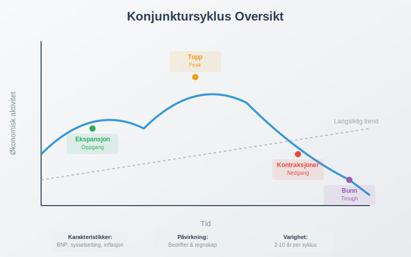
Hovedkomponenter i Konjunktursyklusen:
- Ekspansjon (Oppgang): Periode med økende økonomisk aktivitet
- Topp (Peak): Høyeste punkt i den økonomiske syklusen
- Kontraksjoner (Nedgang): Periode med fallende økonomisk aktivitet
- Bunn (Trough): Laveste punkt før ny oppgang begynner
Konjunkturens Fire Faser
Konjunktursyklusen består av fire distinkte faser som hver har sine egne karakteristikker og påvirkning på bedrifter.
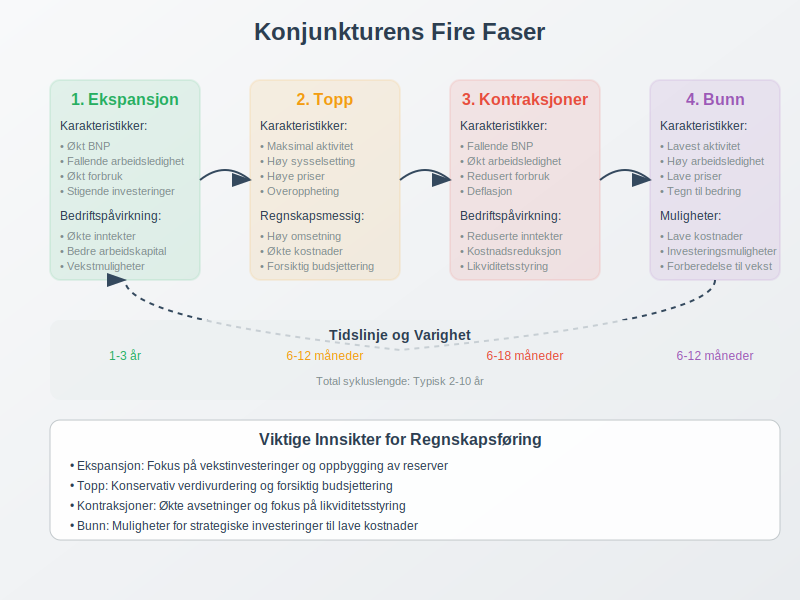
1. Ekspansjonsfasen
Under ekspansjonsfasen opplever økonomien:
- Økt bruttonasjonalprodukt (BNP)
- Fallende arbeidsledighet
- Økt forbruk og investeringer
- Stigende priser og inflasjon
Påvirkning på bedrifter:
- Økte driftsinntekter
- Bedre arbeidskapital
- Økt etterspørsel etter produkter og tjenester
2. Toppfasen
Toppfasen kjennetegnes ved:
- Maksimal økonomisk aktivitet
- Høy sysselsetting
- Høye priser og lønninger
- Potensielle tegn på overoppheting
Regnskapsmessige konsekvenser:
- Høye omsetning og fortjeneste
- Økte driftskostnader
- Behov for forsiktig budsjettering
3. Kontraksjonfasen (Resesjon)
Under kontraksjonfasen opplever økonomien:
- Fallende BNP i to påfølgende kvartaler
- Økt arbeidsledighet
- Redusert forbruk og investeringer
- Fallende priser (deflasjon)
For en detaljert gjennomgang av konseptet, se Resesjon.
Bedriftspåvirkning:
- Reduserte inntekter
- Økt fokus på kostnadsreduksjon
- Behov for likviditetsstyring
4. Bunnfasen
Bunnfasen representerer:
- Laveste punkt i den økonomiske aktiviteten
- Høy arbeidsledighet
- Lave priser og renter
- Begynnende tegn til bedring
Konjunkturindikatorer
Konjunkturindikatorer er økonomiske målinger som hjelper med å identifisere hvor i konjunktursyklusen økonomien befinner seg.
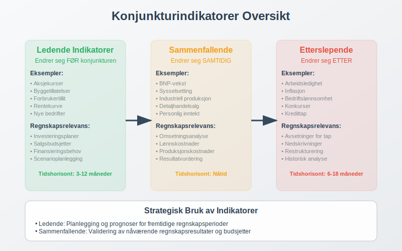
Ledende Indikatorer
Disse indikatorene endrer seg før konjunktursvingninger:
| Indikator | Beskrivelse | Påvirkning på Regnskap |
|---|---|---|
| Aksjekurser | Børsutvikling | Påvirker investeringsregnskapet |
| Byggetillatelser | Nye byggeprosjekter | Indikerer fremtidig anleggsinvestering |
| Forbrukertillit | Husholdningenes optimisme | Påvirker salgsbudsjetter |
| Rentekurve | Forskjell på kort- og langrente | Påvirker finansieringskostnader |
Sammenfallende Indikatorer
Disse endrer seg samtidig med konjunkturen:
- BNP-vekst
- Sysselsetting
- Industriell produksjon
- Detaljhandelsalg
Etterslepende Indikatorer
Disse endrer seg etter konjunktursvingninger:
- Arbeidsledighet
- Inflasjon
- Bedriftenes lønnsomhet
- Konkurser og inkasso
Konjunkturens Påvirkning på Regnskapsføring
Konjunktursvingninger har betydelig innvirkning på hvordan bedrifter fører regnskap og planlegger økonomisk.
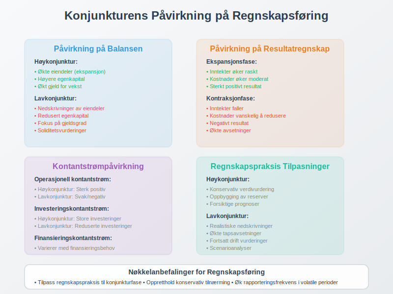
Påvirkning på Balansen
Under høykonjunktur:
- Økte eiendeler grunnet ekspansjon
- Høyere egenkapital fra økt fortjeneste
- Potensielt økt gjeld for vekstfinansiering
Under lavkonjunktur:
- Mulige nedskrivninger av eiendeler
- Redusert egenkapital grunnet tap
- Økt fokus på gjeldsgrad og soliditet
Påvirkning på Resultatregnskapet
| Konjunkturfase | Inntekter | Kostnader | Resultat |
|---|---|---|---|
| Ekspansjon | Øker raskt | Øker moderat | Sterkt positivt |
| Topp | Høye, men stagnerer | Høye | Positivt, men fallende |
| Kontraksjoner | Faller | Vanskelig å redusere | Negativt |
| Bunn | Lave | Reduserte | Svakt negativt/positivt |
Konjunkturstilpasning i Bedrifter
Bedrifter må tilpasse seg konjunktursvingninger gjennom strategisk planlegging og fleksibel økonomistyring.

Strategier for Høykonjunktur
Ekspansjon og vekst:
- Øke investeringer i anleggsmidler
- Bygge opp likviditetsreserver
- Styrke egenkapital for fremtidige nedgangstider
Regnskapsmessige tiltak:
- Konservativ avsetning for fremtidige tap
- Oppbygging av egenkapitalreserver
- Forsiktig verdivurdering av eiendeler
Strategier for Lavkonjunktur
Overlevelse og effektivisering:
- Redusere driftskostnader
- Forbedre arbeidskapitalstyring
- Fokusere på kontantstrøm
Regnskapsmessige tiltak:
- Realistisk vurdering av kundefordringer
- Økte avsetninger for tap
- Nøye likviditetsstyring
Konjunkturanalyse og Prognoser
Konjunkturanalyse er avgjørende for bedrifters strategiske planlegging og budsjettarbeid.
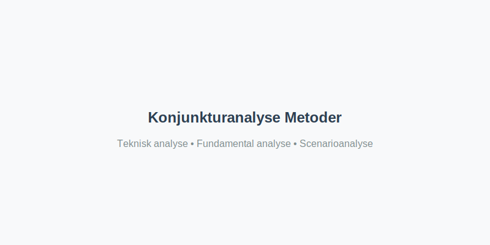
Analysemetoder
1. Teknisk analyse:
- Studier av historiske data og trender
- Identifisering av mønstre i økonomiske indikatorer
- Bruk av statistiske modeller
2. Fundamental analyse:
- Vurdering av underliggende økonomiske faktorer
- Analyse av strukturelle endringer
- Evaluering av politiske og regulatoriske påvirkninger
3. Scenarioanalyse:
- Utvikling av alternative fremtidsscenarier
- Sensitivitetsanalyse av nøkkelfaktorer
- Stresstesting av finansielle prognoser
Prognoseverktøy
| Verktøy | Beskrivelse | Anvendelse |
|---|---|---|
| Økonometriske modeller | Matematiske modeller basert på historiske data | Kvantitative prognoser |
| Ledende indikatorer | Tidlige signaler på konjunkturendringer | Kortsiktige prognoser |
| Ekspertpaneler | Kvalitative vurderinger fra økonomer | Langsiktige trender |
| Markedsundersøkelser | Kartlegging av forventninger | Sektorspesifikke prognoser |
Konjunkturpolitikk og Bedriftspåvirkning
Myndighetenes konjunkturpolitikk påvirker direkte bedriftenes rammebetingelser og regnskapsmessige forhold.
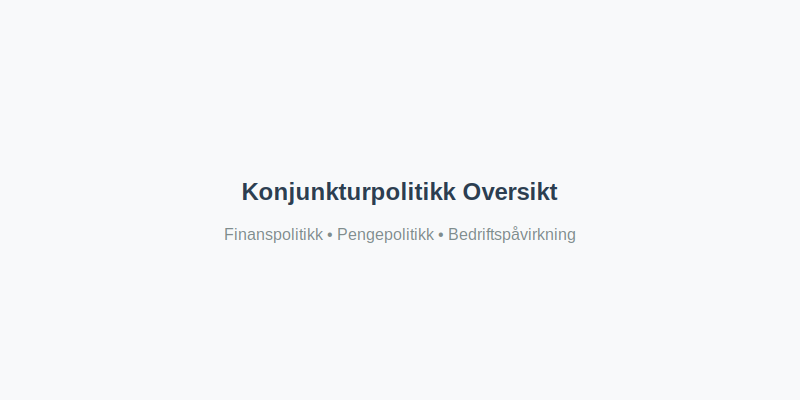
Finanspolitikk
Ekspansiv finanspolitikk (stimulerende):
- Økte offentlige utgifter
- Reduserte skatter
- Økt etterspørsel etter bedriftenes produkter
Kontraktiv finanspolitikk (innstrammende):
- Reduserte offentlige utgifter
- Økte skatter
- Redusert etterspørsel
Regnskapsmessige konsekvenser:
- Endringer i skatteberegninger
- Påvirkning på offentlige tilskudd
- Endret avskrivningsregler
Pengepolitikk
Ekspansiv pengepolitikk:
- Lave renter
- Økt pengemengde
- Lettere tilgang til finansiering
Kontraktiv pengepolitikk:
- Høye renter
- Redusert pengemengde
- Dyrere lånefinansiering
Sektorspesifikke Konjunktureffekter
Ulike bransjer påvirkes forskjellig av konjunktursvingninger, noe som krever tilpassede regnskapsstrategier.
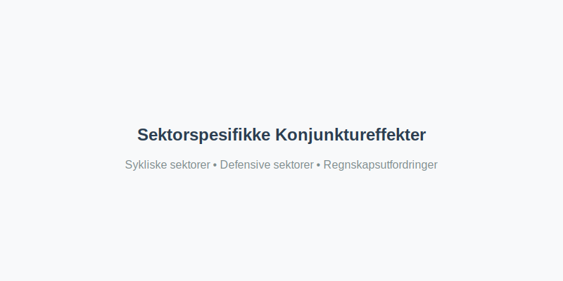
Sykliske Sektorer
Høy konjunktursensitivitet:
- Bygg og anlegg: Sterkt påvirket av investeringsnivå
- Bilindustri: Avhengig av forbrukertillit
- Luksushandel: Følsom for disponibel inntekt
- Råvarer: Påvirket av global etterspørsel
Regnskapsmessige utfordringer:
- Store svingninger i omsetning
- Behov for fleksible kostnadsstrukturer
- Viktig med scenarioplanlegging
Defensive Sektorer
Lav konjunktursensitivitet:
- Dagligvarehandel: Stabil etterspørsel
- Helsevesen: Mindre påvirket av økonomiske svingninger
- Utilities: Stabil inntektsstrøm
- Telekommunikasjon: Nødvendige tjenester
Regnskapsmessige fordeler:
- Mer forutsigbare inntektsstrømmer
- Enklere budsjettplanlegging
- Lavere kredittrisiko
Praktiske Eksempler fra Norsk Økonomi
La oss se på hvordan konjunktursvingninger har påvirket norske bedrifter gjennom konkrete eksempler.
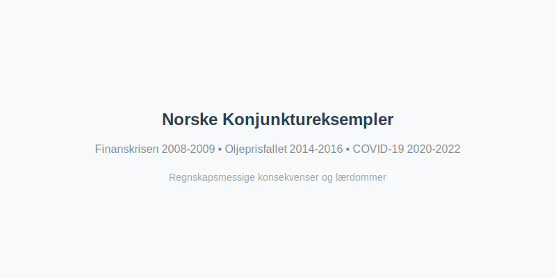
Eksempel 1: Finanskrisen 2008-2009
Situasjon: Global finanskrise med betydelig påvirkning på norsk økonomi.
Påvirkning på bedrifter:
- Kraftig fall i omsetning for mange sektorer
- Økte avsetninger for tap på fordringer
- Behov for restrukturering av gjeld
Regnskapsmessige tiltak:
- Økte nedskrivninger av eiendeler
- Konservativ verdivurdering
- Styrket likviditetsstyring
Eksempel 2: Oljeprisfallet 2014-2016
Situasjon: Dramatisk fall i oljepriser påvirket norsk økonomi betydelig.
Sektorpåvirkning:
- Oljesektoren: Massive nedskjæringer og omstrukturering
- Leverandørindustri: Reduserte investeringer og omsetning
- Regionalt: Særlig påvirkning i Stavanger-regionen
Regnskapsmessige konsekvenser:
- Store nedskrivninger av oljeeiendeler
- Økte avsetninger for restrukturering
- Fokus på kostnadsreduksjon
Eksempel 3: COVID-19 Pandemien 2020-2022
Situasjon: Uventet global pandemi med omfattende økonomiske konsekvenser.
Umiddelbare effekter:
- Nedstengning av store deler av økonomien
- Massive statlige støtteordninger
- Endrede forbruksmønstre
Regnskapsmessige utfordringer:
- Usikkerhet om fortsatt drift
- Kompleks regnskapsføring av støtteordninger
- Økt behov for scenarioanalyser
Konjunkturindikatorer for Bedriftsledere
Bedriftsledere bør følge med på sentrale konjunkturindikatorer for å kunne tilpasse sin virksomhet proaktivt.
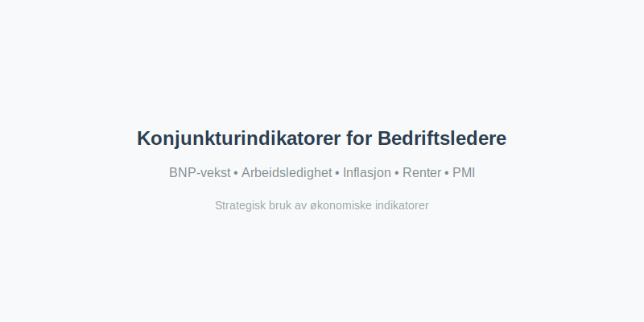
Viktige Indikatorer å Følge
Makroøkonomiske indikatorer:
- BNP-vekst: Generell økonomisk utvikling
- Arbeidsledighet: Arbeidsmarkedets tilstand
- Inflasjon: Prisutviklingen i økonomien
- Renter: Finansieringskostnader og investeringsklima
Bransjespecifikke indikatorer:
- PMI (Purchasing Managers’ Index): Industriell aktivitet
- Forbrukertillit: Husholdningenes optimisme
- Boligpriser: Eiendomsmarkedets utvikling
- Valutakurser: Påvirkning på import/eksport
Hvordan Bruke Indikatorene
| Indikator | Stigende trend | Fallende trend | Regnskapsmessig respons |
|---|---|---|---|
| BNP-vekst | Ekspansjon | Kontraksjoner | Juster budsjetter tilsvarende |
| Arbeidsledighet | Lavkonjunktur | Høykonjunktur | Vurder lønnskostnader |
| Renter | Dyrere finansiering | Billigere finansiering | Revurder investeringsplaner |
| Inflasjon | Økte kostnader | Prispress nedover | Juster prisstrategier |
Beste Praksis for Konjunkturtilpasning
Suksessfulle bedrifter utvikler robuste strategier for å håndtere konjunktursvingninger.
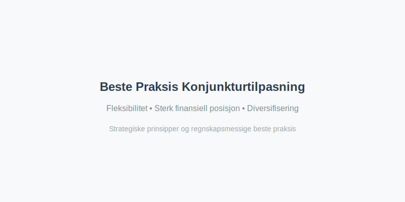
Strategiske Prinsipper
1. Fleksibilitet i kostnadsstrukturen:
- Høy andel variable kostnader
- Fleksible lønnsordninger
- Outsourcing av ikke-kritiske funksjoner
2. Sterk finansiell posisjon:
- Solid egenkapitalandel
- Tilstrekkelige likviditetsreserver
- Diversifiserte finansieringskilder
3. Diversifisering:
- Flere markeder og kundesegmenter
- Balansert produktportefølje
- Geografisk spredning
Regnskapsmessige Beste Praksis
Konservativ regnskapsføring:
- Forsiktig verdivurdering av eiendeler
- Tilstrekkelige avsetninger for tap
- Realistiske budsjetter og prognoser
Forbedret rapportering:
- Hyppigere finansiell rapportering
- Detaljerte kontantstrømanalyser
- Scenariobaserte sensitivitetsanalyser
Fremtidige Konjunkturtrender
Moderne økonomi påvirkes av nye faktorer som endrer tradisjonelle konjunkturmønstre.
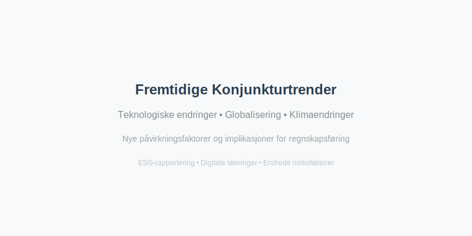
Nye Påvirkningsfaktorer
Teknologiske endringer:
- Digitalisering og automatisering
- Kunstig intelligens og maskinlæring
- Nye forretningsmodeller
Globalisering og handelskrig:
- Økt økonomisk integrasjon
- Handelspolitiske spenninger
- Forsyningskjedeutfordringer
Klimaendringer og bærekraft:
- Grønn omstilling
- ESG-rapportering
- Regulatoriske endringer
Implikasjoner for Regnskapsføring
Nye regnskapsstandarder:
- Økt fokus på Bærekraft
- Kompleksere verdivurderingsmodeller
- Digitale regnskapsløsninger
Endrede risikofaktorer:
- Cyber-sikkerhet og datavern
- Klimarelaterte finansielle risikoer
- Geopolitisk usikkerhet
Konklusjon
Konjunktur er en fundamental kraft som påvirker alle aspekter av bedriftsdrift og regnskapsføring. Forståelse av konjunktursykluser og deres påvirkning er avgjørende for:
- Strategisk planlegging: Tilpasse forretningsstrategier til økonomiske sykluser
- Finansiell styring: Optimalisere kapitalstruktur og likviditetsstyring
- Regnskapsføring: Sikre korrekt verdivurdering og avsetninger
- Risikostyring: Identifisere og håndtere konjunkturrelaterte risikoer
Ved å følge konjunkturindikatorer, implementere fleksible strategier og opprettholde konservativ regnskapsføring, kan bedrifter navigere gjennom økonomiske sykluser og opprettholde langsiktig lønnsomhet og vekst.
Moderne bedrifter må også være forberedt på at fremtidige konjunktursykluser kan være påvirket av nye faktorer som teknologi, klimaendringer og geopolitiske forhold, noe som krever kontinuerlig tilpasning av både forretningsstrategier og regnskapspraksis.